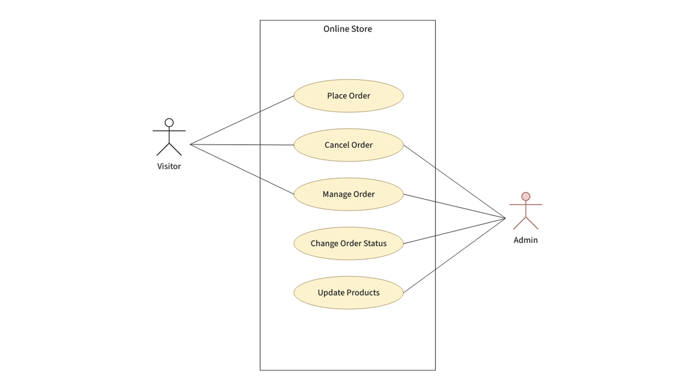
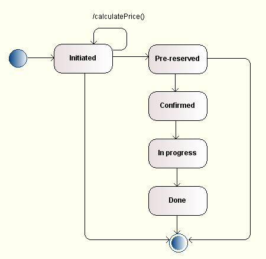
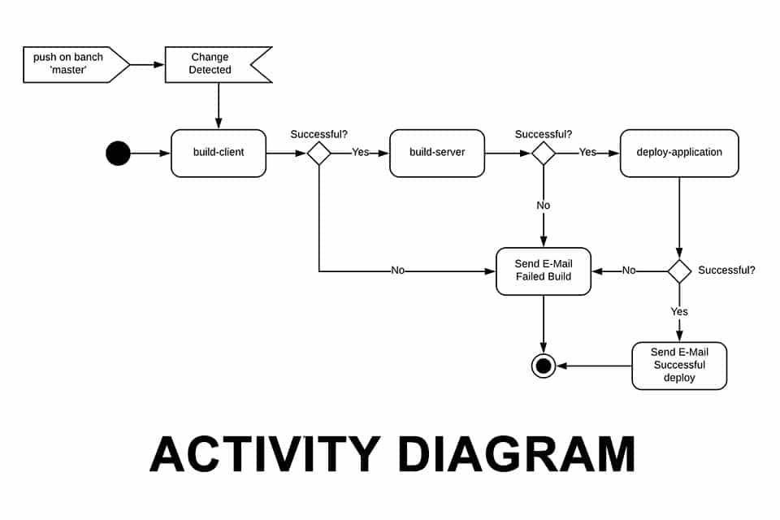

Unified Modeling Language (UML)
Unified Modeling Language (UML) on standardiseeritud graafiline modelleerimiskeel,
mida kasutatakse tarkvarasüsteemide ja protsesside kirjeldamiseks. UML võimaldab
visualiseerida süsteemi struktuuri, käitumist ja interaktsioone erinevate diagrammide abil.
See on laialdaselt kasutusel tarkvaraarenduses, et aidata analüütikutel, arendajatel ja
projektijuhtidel ühtselt mõista süsteemi ülesehitust ja toimimist.
Lingid ERD-le ja Flowcharti-le
UML põhidiagrammid
Use Case diagramm
Use Case diagramm kirjeldab süsteemi funktsionaalsust kasutaja vaatepunktist.
See näitab, milliseid tegevusi (use case'e) kasutajad ehk aktorid saavad süsteemis teha.
Kujundid ja elemendid
- Aktor – inimene või süsteem, kes suhtleb modelleeritava süsteemiga (joonistatakse pulgakujulisena).
- Use Case – süsteemi funktsionaalsus (ovaalne kujund).
- Seosed – jooned, mis ühendavad aktori ja use case'i.
- Include / Extend – seosed use case’ide vahel lisafunktsionaalsuse näitamiseks.
Näidisjoonis

Class diagramm
Class diagramm kirjeldab süsteemi struktuuri: klasse, nende omadusi, meetodeid ning omavahelisi suhteid.
See on üks olulisemaid UML diagrammide tüüpe objektorienteeritud arenduses.
Kujundid ja elemendid
- Klass – ristkülik, mis jaguneb kolmeks: nimi, atribuudid, meetodid.
- Assotsiatsioon – tavaline seos klasside vahel (joon).
- Pärilus – noolega seos, mis näitab alamklassi ja ülemklassi suhet.
- Kompositsioon / Aggregatsioon – näitab „osa–tervik“ suhteid.
Näidisjoonis

Sequence diagramm
Sequence diagramm kirjeldab objektide omavahelist ajaliselt järjestatud suhtlust.
Seda kasutatakse protsesside ja töövoogude detailseks kirjeldamiseks.
Kujundid ja elemendid
- Osalejad – objektid või süsteemi komponendid (kastid ülal).
- Elujoon – vertikaalne punktiirjoon, mis näitab objekti eluaega.
- Sõnum – nool, mis näitab ühe objekti tegevust teise suhtes.
- Aktiveerimisriba – kitsas ristkülik, mis näitab, millal objekt on aktiivne.
Näidisjoonis

State diagramm
State diagramm kirjeldab objekti elutsükli erinevaid olekuid ja üleminekuid nende vahel.
Seda kasutatakse näiteks kasutaja sessiooni, masina töörežiimide või mängu olekute modelleerimiseks.
Kujundid ja elemendid
- Algolek – täidetud must ring.
- Oleku kast – näitab objekti olekut ning selles toimuvaid tegevusi.
- Üleminek – nool ühe oleku juurest teise juurde.
- Lõppolek – must ring valge ringi sees.
Näidisjoonis

Activity diagramm (vabalt valitud)
Activity diagramm kirjeldab protsessi või töövoo järjestust.
Seda kasutatakse tegevuste ja otsustuspunktide visualiseerimiseks.
Kujundid ja elemendid
- Tegevus – ümardatud ristkülik, mis näitab toimingut.
- Otsus – romb, kust hargnevad erinevad teed.
- Algus / Lõpp – samad märgid mis state diagrammis.
- Järjestusjoon – nool, mis näitab tegevuste järjekorda.
Näidisjoonis

Viited